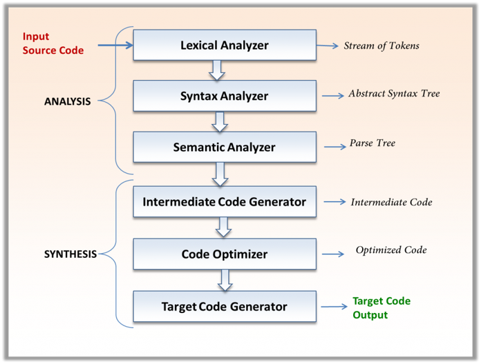

Program Compilation Stages
Compilation is the rigorous process of translating high-level source code (e.g., in Python or Java) into low-level machine code that a computer's CPU can execute. A compiler processes the entire program as a whole before execution to check for errors and optimize for speed and efficiency.
Learning Objectives
- 12.5.1.3 Describe programme compilation stages: lexical, syntactic, semantic analysis, intermediate code generation, optimization, and target code generation
- 12.5.1.4 Understand the role of linkers, loaders, and library routines

Conceptual Anchor
The Translation Bureau
Imagine translating a complex academic book from English to Kazakh. First, you meticulously break the text into individual words, ignoring spaces (lexical analysis). Then you verify the grammar rules (syntax analysis). Next, you ensure the meaning makes logical sense contextually (semantic analysis). You write a rough draft (intermediate code), polish it by removing redundant phrases without changing the meaning (optimization), and finally publish the printed binary book (target code generation).
The 6 Phases of Compiler Design
1 Lexical Analysis
This is the first phase of the compilation process, operating as a scanner. Its primary responsibilities include:
- All the comments and whitespace are strictly removed from the program.
- High-level code is turned into a series of tokens, using reserved words that the computer is able to pick out.
- Symbol Table Creation: A vital data structure is created which stores the names and addresses of all variables and constants. Variables are rigorously checked to make sure they have been declared and to determine the specific data types used.
- The resulting token stream is then passed to the next stage.
2 Syntactic Analysis (Parsing)
This phase evaluates the structural correctness of the token stream against the grammar of the programming language.
- Checks that the code is written in a valid syntax.
- Compiles a comprehensive list of errors for the user where the code does not follow the language rules.
- Produces a Parser Tree, representing the grammatical structure of the program.
- Subsequently, it produces an Abstract Syntax Tree (AST), which is a refined representation of the program.
| Parse Tree | Abstract Syntax Tree (AST) |
|---|---|
| Uses interior nodes to represent a grammar rule. | Uses operators/operations as root and interior nodes, and uses operands as their children. |
| Represents every detail from the real syntax, including rule nodes and parentheses. | Does not use interior nodes to represent grammar rules. It does not represent every detail from the real syntax (no rule nodes, no parentheses). |
| Highly detailed and verbose. | Dense compared to a parse tree for the same language construct. It is a polished version maintaining only information relevant to understanding the code. |
3 Semantic Analysis
This phase goes beyond structural grammar to verify logical consistency. It checks whether the syntactically correct statements actually make sense. For instance, it enforces type checking (ensuring a string is not multiplied by a float) and confirms that operators are applied to compatible operands.
4 Intermediate Code Generation
The compiler generates a machine-independent intermediate representation of the source code. This acts as a bridge: it is easier to translate into target machine code than the high-level language, yet it remains independent of any specific hardware architecture, facilitating easier cross-platform compilation.
5 Code Optimization
The primary goal of this stage is to improve the intermediate code. It is designed to reduce execution time and minimize memory utilization without altering the actual logic or the final output of the program. It achieves this by eliminating dead code, removing redundant instructions, and streamlining loops.
6 Target Code Generation
In the final phase, the optimized intermediate code is translated into the actual machine code (binary instructions) or object code that is specifically tailored to the target CPU's architecture and instruction set.
Linkers, Loaders & Library Routines
Library Routines
- Definition: Standardized, pre-written segments of code.
- Why it is needed: Library routines have already been written and tested so the programmer is saved a lot of work. The code exists in compiled form so it does not need to be re-compiled when it is used, which drastically reduces development time.
- Where it is applied: Standard mathematical operations, input/output handling, and string manipulation tasks within large software projects.
Linkers
- Definition: An essential utility program utilized during the compilation process.
- Why it is needed: The linker links multiple compiled object files and library routines together into a single executable file. Crucially, it makes sure that references from one module to another are correct.
- Where it is applied: Software development environments where programs are broken down into multiple separate source files and modules.
Loaders
- Definition: A utility program employed at runtime.
- Why it is needed: A loader loads all the modules into memory (RAM) and prepares them for execution. It sorts out difficulties such as changes of addresses for the variables dynamically.
- Where it is applied: Operating systems use loaders every time an application or executable file is launched by the user.
Common Pitfalls
AST vs Parse Tree
Do not confuse them! An AST does not use interior nodes to represent grammar rules and strips away parentheses. A Parse Tree represents every detail from the real syntax. ASTs are dense compared to a parse tree.
Linker vs Loader Timing
The Linker is used during the compilation process to link object files into a single executable file. The Loader is used at runtime to load the executable file into memory and prepare it for execution.
Exam Style Tasks
Draw a line linking each stage of compilation to its correct description.
Stages: Lexical Analysis, Syntax Analysis, Target Code Generation, Code
Optimization.
Descriptions:
- An abstract syntax tree is produced.
- The time taken to execute the program is reduced.
- Comments and whitespace are removed.
- Machine code is produced.
Create an Abstract Syntax Tree (AST) for the expression:
"7 + 3 * (10 / (12 / (3 + 1) - 1))". Remember that the operators act as the
root nodes and the operands as the children.
Explain the difference between a Linker and a Loader, specifically detailing the timeframe in the software development process when each utility is used.
Self-Check Quiz
Q1: What is the purpose of the Symbol Table and when is it created?
Q2: Why are Library Routines useful?
Q3: How does optimization affect the output of a program?